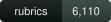
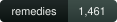
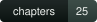
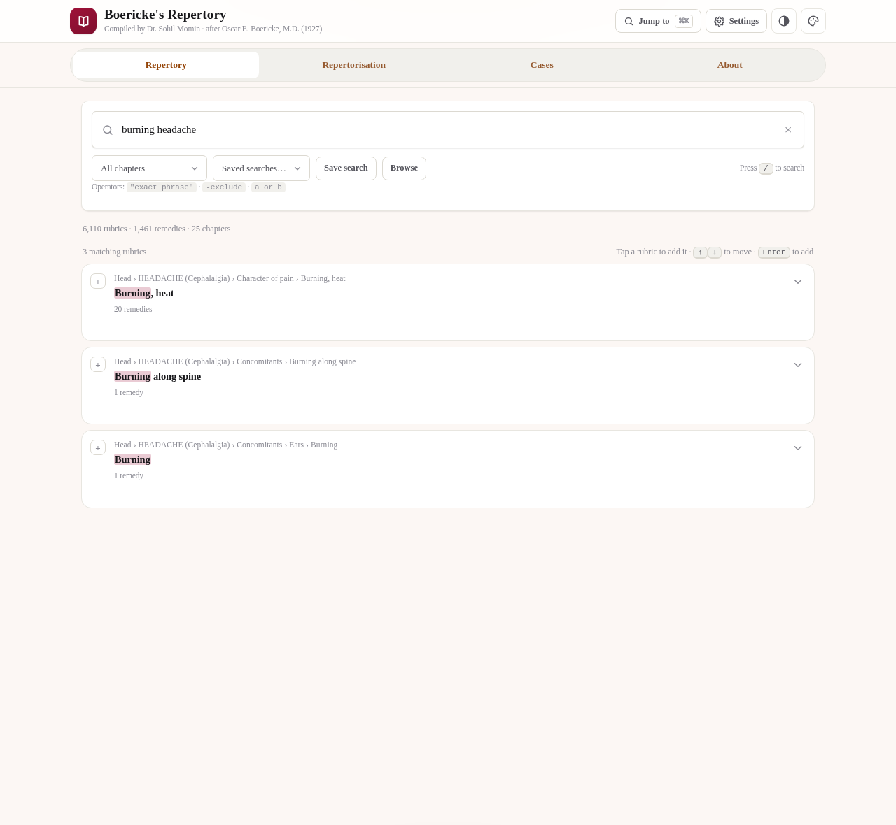

Oscar E. Boericke, M.D. · 1927 · digitised
The repertory,
indexed.
A classic clinical repertory as one HTML file — 6,110 rubrics, 1,461 remedies, 25 chapters. Query it with operators, browse it by chapter, mark a rubric must-have and let the chart eliminate what misses it. No server, no account, no network, not even to load a font.
Also released as Windows .exe · Android .apk



The app, not a picture of it
Try it here

↑ this frame is the real app, loaded from play/. Nothing is mocked. If it cannot load, the screenshot stays behind it.
What it does
Three things, done properly
A repertory is only useful if you can move through it faster than the book. That is the whole brief.
Search like a query
Six thousand rubrics, searched instantly with the operators you would expect —
"exact phrase", -exclude, a or b — plus typo
tolerance, and Gelsemium finds the source's own Gels. Prefer the book's
structure? Browse walks it chapter by chapter.
Rank, then eliminate
Grade 2 counts two points, grade 1 one — or set your own weights, printed on the chart so it stays auditable. Mark rubrics must-have and fade every remedy that misses one. Tap any remedy to see every rubric that lists it.
Encrypted, if you want
Patient details, notes and prescription sit with the selection and the chart. Lock them with a passphrase and they are sealed with AES-256-GCM in the browser — the key is never stored. Print a one-page case sheet, export JSON or CSV, or copy a citation for any rubric that names the edition and the grades — and a source check that says whether the rubric matches the 1927 text exactly.
What it refuses to do
Nothing here phones home
A clinical tool that needs a connection is a clinical tool that stops working when you need it. These are limits, chosen on purpose.
Release 1.5.0 · 1 November 2026
What changed
The repertory got the things a working repertory needs: a search you can query, a chart that can eliminate, and cases that can be locked. Every one of them runs in the same single file, with nothing added to fetch.
- Query operators
"exact phrase",-exclude,a or b, and typo tolerance when nothing matches - Browse the chaptersthe book's own tree, expanded lazily, with a count per chapter
- Must-have rubricsBoenninghausen-style elimination, with the misses faded in the chart
- Grade weights you set1 / 2 / 3, printed on the chart and in the print sheet
- An encrypted vaultAES-256-GCM with a PBKDF2 passphrase, derived in the browser
- Command palette, undo, saved searches, rubric notes⌘K to jump anywhere, ⌘Z to take it back
- One-page case sheet, CSV export, backup reminderan A4 print stylesheet and a plain-data exit
- Service worker, installable, build stampnetwork-first HTML, so a new release is never hidden by the cache
- Hindi and Gujarati interfacethe chrome in three languages; Boericke's text stays in the original English
- A citation for any rubricpath, chapter, edition and the grade split, ready to paste into a case note — and the author's own prefatory note, quoted in full
- Every rubric checked against the source5,319 of 5,415 rubrics match the 1927 text remedy for remedy and grade for grade; the 96 that differ are listed, with the source's own line
The text
Where it comes from
The rubrics are Oscar E. Boericke's Repertory (1927), the companion volume to Boericke's Pocket Manual of Homoeopathic Materia Medica, 9th edition. The text is digitised from the public-domain edition at homeoint.org, presented by Médi-T.
The dataset was cleaned rather than copied: OCR variants of a remedy name are merged into one canonical name, duplicate rubrics are merged, and remedy-less category headings are kept for structure but never appear in search results — so every rubric you see carries at least one remedy.
Attribution is compulsory. Content: Repertory by Oscar E. Boericke, M.D. (1927). Design & application: Dr. Sohil Momin. See the licence.
The app
How it is built
One 821 kB HTML file: the stylesheet, the script and the entire dataset are inline. System fonts, CSS variables for the theme, and no build step — open it in a browser and it runs. The Windows executable and the Android APK are the same page in a shell, built from the same commit as the demo above.
The grade marks are the book's own: italic grade 2 counts two points, plain grade 1 counts one. Nothing is re-weighted or re-scored, so the chart can be checked by hand against the page.
Run it
Three ways in
- Open the live appNothing to install. play/ — works on phone, tablet or desktop.
- Keep the fileDownload
index.html, double-click it. That is the entire installation, and it works with the Wi-Fi off. - Self-hostFork the repo, enable GitHub Pages, and it is yours — one file, no configuration.
On a machine with no internet
Built for the clinic
Copy the file to a USB stick, a shared drive, or an old laptop in the consulting room. It opens the same way, with no licence check and no first-run download.
If you want it as an app icon on the home screen, use the browser's Install / Add to Home Screen — the page carries its own manifest and icon, so it launches full-screen and still never touches the network.
Releases carry the portable Windows build and the signed Android APK, each with its own icon.